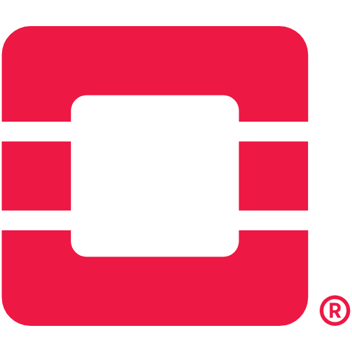

Hi, I'm Vignesh Kumar
Platform Engineer | Software Engineer
Java Backend Developer specializing in Cloud Networking, Security Automation, Firewall Management and DevOps.

Java Backend Developer specializing in Cloud Networking, Security Automation, Firewall Management and DevOps.





Automated Cisco ACI provisioning through Cisco APIC REST APIs and Camunda BPMN.
Vendor agnostic security automation platform supporting Fortinet and OpenStack Security Groups.
View Project →Automated load balancer deployment, VIP creation and Keepalived failover.
View Project →Java backend application for student record and marks management.
View Project →Latency Reduction
VM Provisioning
Years Experience